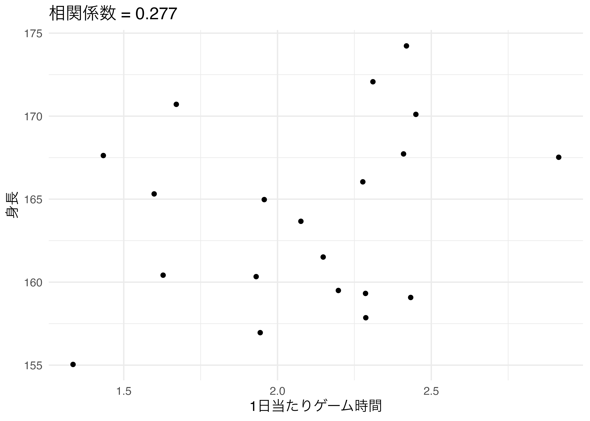

28. オブジェクト指向型プログラミング
28.1 まずは例から
Vector1 <- c(1, 5, 3, 7, 9, 12, 5, 4, 10, 1)
Vector2 <- c("A", "B", "D", "B", "E", "A", "A", "D", "C", "C")## Min. 1st Qu. Median Mean 3rd Qu. Max.
## 1.00 3.25 5.00 5.70 8.50 12.00## Length Class Mode
## 10 character character同じsummary()関数ですが、中のデータのタイプによって動きが異なります。これがオブジェクト指向プログラミングにおいて「多態性 (polymorphism)」と呼ばれる概念です。同じ関数でもデータ型、またはデータ構造に応じて異なる動きをすることです。ここでのデータ型やデータ構造を、OOPでは「クラス (class)」と呼びます。クラスはclass()関数で確認することができます。
## [1] "numeric"## [1] "character"Vector1はnumeric、Vector2はcharacterです。もし、無理矢理にVector1のクラスをcharacterに変えればどうなるでしょうか。クラスの変更はclass(オブジェクト名) <- "クラス名"でできます。一つのオブジェクトは複数のクラスが持てますが、これはOOPの「継承 (inheritance)」概念に関係するので後で解説します。ここではまず、Vector1のクラスをcharacterにし、もう一回summary()を使ってみましょう。
## Length Class Mode
## 10 character characterデータの中身は変わっていませんが、summary()関数の動き方が変わりました。このように、Rで頻繁に使うsummary()、print()、plot()などの関数は様々なクラスの対応しております。lm()関数を使った回帰分析の結果オブジェクトのクラス名はlmであり、その結果を見るためにもsummary()関数を使います。他にもplot(lmオブジェクト名)をすると回帰診断の図が表示されます。これができないと、各クラスに応じた関数を作成する必要がありますね。numeric型専用のnumeric_print()、character型専用のcharacter_print()、lm型専用のlm_plot()など…、覚えなきゃいけない関数が増えてきます。ユーザー側でも大変ですが、コードを作成する側も大変です。実際、図28.1107を見ると、プログラマーにとって最も大変な仕事は「名付け」であることが分かります。

図 28.1: Programmers’ Hardest Tasks
OOPの多態性にはこのような煩わしい仕事を軽減する機能があります。OOPにはここで紹介した多態性以外にも、「継承 (inheritance)」、「カプセル化 (encapsulation)」のような特徴があります。他にも人によっては「メッセージパッシング (message passing)」、「動的バインディング (dynamic binding)」などの特徴を述べたりしますが、詳しい話は専門書に譲りたいと思います。また、ここではRのS3クラスについて解説しますが、S3はカプセル化に対応しておりません。したがって、ここでは以下の概念について例と一緒に解説していきたいと思います。
- オブジェクト (object)
- クラス (class)
- メソッド (method)
- 多態性 (polymorphism)
- 継承 (inheritance)
28.2 OOPとは
28.2.1 オブジェクト
ここは第10章の内容の繰り返しですが、オブジェクト (object) とはメモリに割り当てられた「何か」です。「何か」に該当するのは、ベクトル (vector)、行列 (matrix)、データフレーム (data frame)、リスト (list)、関数 (function) などがあります。一般的に、オブジェクトにはそれぞれ固有の（つまり、他のオブジェクトと重複しない）名前が付いています。
たとえば、1から5までの自然数の数列を
のようにmy_vec1という名前のオブジェクトに格納します。オブジェクトに名前をつけてメモリに割り当てると、その後 my_vec1 と入力するだけでそのオブジェクトの中身を読み込むことができるようになります。
ここで、次のように my_vec1の要素を2倍にする操作を考えてみましょう。
## [1] 2 4 6 8 10my_vec1は、先ほど定義したオブジェクトです。では2はどうでしょうか。2はメモリに割り当てられていないので、オブジェクトではないでしょうか。実は、この数字 2 もオブジェクトです。計算する瞬間のみ2がメモリに割り当てられ、計算が終わったらメモリから消されると考えれば良いでしょう。むろん、* のような演算子でさえもオブジェクトです。
28.2.2 クラス
クラス (class) とはオブジェクトを特徴づける属性のことです。既に何度か class() 関数を使ってデータ型やデータ構造を確認しましたが、class()関数でオブジェクトのクラスを確認することができます。先ほど、my_vec1も*も2もオブジェクトであると説明しました。これらがすべてオブジェクトであるということは、何らかのクラス属性を持っているというこです。また、class()関数そのものもオブジェクトなので、何らかのクラスを持ちます。確認してみましょう。
## [1] "numeric"## [1] "function"## [1] "numeric"## [1] "function"統計分析をする際に、Rのクラスを意識することはあまりありません。しかし、Rでオブジェクト指向プログラミングを行う際は、オブジェクトのクラスを厳密に定義する必要があります。
Rにおける全てはオブジェクトであり、全てのオブジェクトは一つ以上クラスが付与されています。このクラスの考え方はプログラミング言語によって異なります。たとえば、Pythonの場合、一つのクラスの内部にはオブジェクトのデータ構造が定義され、そのクラスで使用可能な関数も含んでいます。また、データを含む場合もあります。このようにクラス内部にデータ、データ構造、専用関数などを格納することをカプセル化（encapsulation）と呼びます。
一方、Rの（S3）クラスにはクラス専用関数がクラス内で定義されておらず、データのみが格納されています。
28.2.3 メソッドと多態性
各クラス専用の関数をメソッド（method）と呼びます。たとえば、summary()関数を考えてみましょう。lm()関数を用いた回帰分析から得られたオブジェクトのクラスはlmであり、c()で作られた数値型ベクトルのクラスはnumericです。しかし、同じsummary()関数ですが、引数のクラスがlmかnumericかによって異なる動きを見せます。その例を見ましょう。
## [1] "numeric"## [1] "lm"## Min. 1st Qu. Median Mean 3rd Qu. Max.
## 1.0 3.5 6.0 6.0 8.5 11.0##
## Call:
## lm(formula = Y ~ X)
##
## Residuals:
## 1 2 3 4 5 6
## 1.3333 -0.2667 -1.8667 -0.4667 0.9333 0.3333
##
## Coefficients:
## Estimate Std. Error t value Pr(>|t|)
## (Intercept) -1.6333 1.0546 -1.549 0.19637
## X 1.3000 0.1528 8.510 0.00105
##
## Residual standard error: 1.278 on 4 degrees of freedom
## Multiple R-squared: 0.9477, Adjusted R-squared: 0.9346
## F-statistic: 72.43 on 1 and 4 DF, p-value: 0.001046このように同じ関数でもクラスによって異なる動作をすることを多態性 (polymorphism)と呼びます。しかし、実はRにおいてこれらの関数は別途作られた関数です。つまり、summary()という関数がクラスごとに定義されていることを意味します。summary()関数がどのクラスで使用可能かを確認するためにはmethods()関数を使います。
## [1] summary,ANY-method summary,DBIObject-method
## [3] summary.aov summary.aovlist*
## [5] summary.aspell* summary.check_packages_in_dir*
## [7] summary.connection summary.data.frame
## [9] summary.Date summary.default
## [11] summary.Duration* summary.ecdf*
## [13] summary.factor summary.ggplot*
## [15] summary.glm summary.haven_labelled*
## [17] summary.hcl_palettes* summary.infl*
## [19] summary.Interval* summary.lm
## [21] summary.loess* summary.manova
## [23] summary.matrix summary.mlm*
## [25] summary.nls* summary.packageStatus*
## [27] summary.Period* summary.POSIXct
## [29] summary.POSIXlt summary.ppr*
## [31] summary.prcomp* summary.princomp*
## [33] summary.proc_time summary.rlang_error*
## [35] summary.rlang_message* summary.rlang_trace*
## [37] summary.rlang_warning* summary.rlang:::list_of_conditions*
## [39] summary.srcfile summary.srcref
## [41] summary.stepfun summary.stl*
## [43] summary.table summary.tukeysmooth*
## [45] summary.vctrs_sclr* summary.vctrs_vctr*
## [47] summary.warnings
## see '?methods' for accessing help and source codeこのように47種類のクラスに対してsummary()関数が定義されています108。この関数の内部を確認するにはどうすれば良いでしょうか。関数のコードを見るときにはコンソール上に関数名を入力するだけです（()は不要）。
## function (object, ...)
## UseMethod("summary")
## <bytecode: 0x7f995b8b5d08>
## <environment: namespace:base>しかし、多態性を持つ関数の内部を見ることはできません。そもそもsummary()関数はクラスごとに異なるコードを持っているため、summaryだけでは「どのクラスのsummary()か」が分かりません。それでもRにはsummary()関数が存在し、それをジェネリック関数（generic function）と呼びます。内部にはUseMethod("summary")のみが書かれており、これは「このsummary()関数は様々なクラスのメソッドとして機能するぞ」と宣言しているだけです。各クラスに対応したメソッドの内部を見るにはgetS3method("メソッド名", "クラス名")を使います。summary()メソッドはnumeric型が別途指定されていないため、"defualt"となります。
## function (object, ..., digits, quantile.type = 7)
## {
## if (is.factor(object))
## return(summary.factor(object, ...))
## else if (is.matrix(object)) {
## if (missing(digits))
## return(summary.matrix(object, quantile.type = quantile.type,
## ...))
## else return(summary.matrix(object, digits = digits, quantile.type = quantile.type,
## ...))
## }
## value <- if (is.logical(object))
## c(Mode = "logical", {
## tb <- table(object, exclude = NULL, useNA = "ifany")
## if (!is.null(n <- dimnames(tb)[[1L]]) && any(iN <- is.na(n))) dimnames(tb)[[1L]][iN] <- "NA's"
## tb
## })
## else if (is.numeric(object)) {
## nas <- is.na(object)
## object <- object[!nas]
## qq <- stats::quantile(object, names = FALSE, type = quantile.type)
## qq <- c(qq[1L:3L], mean(object), qq[4L:5L])
## if (!missing(digits))
## qq <- signif(qq, digits)
## names(qq) <- c("Min.", "1st Qu.", "Median", "Mean", "3rd Qu.",
## "Max.")
## if (any(nas))
## c(qq, `NA's` = sum(nas))
## else qq
## }
## else if (is.recursive(object) && !is.language(object) &&
## (n <- length(object))) {
## sumry <- array("", c(n, 3L), list(names(object), c("Length",
## "Class", "Mode")))
## ll <- numeric(n)
## for (i in 1L:n) {
## ii <- object[[i]]
## ll[i] <- length(ii)
## cls <- oldClass(ii)
## sumry[i, 2L] <- if (length(cls))
## cls[1L]
## else "-none-"
## sumry[i, 3L] <- mode(ii)
## }
## sumry[, 1L] <- format(as.integer(ll))
## sumry
## }
## else c(Length = length(object), Class = class(object), Mode = mode(object))
## class(value) <- c("summaryDefault", "table")
## value
## }
## <bytecode: 0x7f995f2dca00>
## <environment: namespace:base>Rにはメソッドがクラス内部で定義されず、別途のメソッド名.クラス名()といった関数として作成されています。そしてジェネリック関数によって一つの関数の「ように」まとまっています。このように、ジェネリック関数経由でメソッドを呼び出すことをメソッド・ディスパッチ（method dispatch）と呼びます。
28.2.4 継承
クラスの継承 (inheritance)は一つのオブジェクトが2つ以上のクラスを持つ場合、子クラスが親クラスの特徴を継承することを意味します。たとえば、データフレームの拡張版とも言えるtibbleの場合、複数のクラスを持っています。
## [1] "tbl_df" "tbl" "data.frame"このmy_tibbleはtlb_dfとtbl、data.frameといった3つのクラスを持っており、先に出てきたものが子クラス、後に出てくるものが親クラスです。tblクラスとdata.frameクラス両方に同じメソッドが定義されている場合、まず子クラスであるメソッド.tbl()が実行されます。もし、子クラスにメソッドが定義されていない場合はtblの親クラスであるdata.frameのメソッドが実行されます。tibbleはデータフレームとは異なるクラスのオブジェクトですが、データフレームと（ほぼ）同じ操作ができるのは、クラスが継承されるからです。クラスの継承ができないと、tibbleで使える全ての関数（列や行の抽出に使う[や$なども！）を全て一から定義する必要がありますが109、継承を使うことによってこのような手間を省くことが出来ます。
28.3 RにおけるOOP
28.3.1 オブジェクトに任意のクラスを付ける
クラスを変えるのは簡単です。class(オブジェクト) <- "新しいクラス名"だけです。つまり、関数から何かの結果を返す直前にクラスを変更すれば良いです。
たとえば、入力された2つのベクトル（xとy）をリスト構造とし、クラス名をScoreにするにはどうすれば良いでしょうか。
Make_Score1 <- function(x, y) {
# resultリストにxとyを格納
result <- list(Score1 = x, Score2 = y)
# 以下は attr(result, "class") <- "Score" も可
class(result) <- "Score" # resultのクラスを"Score"とする
result # resultを返す
}
My_Score1 <- Make_Score1(x = rnorm(10, 50, 10),
y = rnorm(10, 50, 10))
My_Score1 # My_Score1の内部を見る## $Score1
## [1] 48.15261 31.71848 66.69295 50.44884 46.03311 47.31877 59.16369 39.81164
## [9] 44.83052 33.13956
##
## $Score2
## [1] 42.82859 53.75754 53.78289 39.67029 52.88615 57.55593 40.61156 70.14369
## [9] 39.14696 49.16806
##
## attr(,"class")
## [1] "Score"## [1] "Score"もう一つの方法はstructure()関数を使う方法です。sturcture()の第1引数に返すオブジェクト名を指定し、class = "クラス名"引数でクラスを指定します。
Make_Score2 <- function(x, y) {
# resultリストにxとyを格納
result <- list(Score1 = x, Score2 = y)
structure(result, class = "Score") # resultを返す
}
My_Score2 <- Make_Score2(x = rnorm(10, 50, 10),
y = rnorm(10, 50, 10))
My_Score2 # My_Score2の内部を見る## $Score1
## [1] 62.93155 63.09144 65.41424 59.76496 53.30484 44.97957 58.67507 32.82065
## [9] 57.95109 50.32117
##
## $Score2
## [1] 41.67650 55.83172 58.97678 45.40225 56.88026 50.05381 43.20137 66.21320
## [9] 45.67556 34.10742
##
## attr(,"class")
## [1] "Score"## [1] "Score"どれも同じ結果が得られます。
28.3.2 メソッドの作り方
28.3.2.1 既に存在する関数名を使う
先ほど作成しましたScoreクラスのオブジェクトは長さ2のリスト構造をしています。これらの要素それぞれの平均値を求める場合は、mean(My_Score1[[1]])とmean(My_Score1[[2]])を実行する必要があります。なぜなら、mean()はベクトルしか計算できないからです。ここではScoreクラスのオブジェクト要素それぞれの平均値を求める関数mean()を作成します。
しかし、問題があります。それはRにmean()関数が既に存在することです。ここで勝手に上書きするのは良くないでしょう。ここで出てくるのがメソッドです。Scoreクラスのメソッドは「Scoreクラス専用の関数」であり、通常のベクトルならR内蔵のmean()関数を、ScoreクラスのオブジェクトならScoreのメソッドであるmean()を実行します。
メソッドの作り方は自作関数と同じです。相違点としては関数名を関数名.クラス名にすることです。Scoreクラスのメソッドしてのmean()関数を定義する場合、関数名をmean.Scoreとします。
mean.Score <- function(x) {
print(mean(x$Score1))
print(mean(x$Score2))
}
mean(c(1, 3, 5, 7, 9, 11)) # R内蔵関数のmean()を使う## [1] 6## [1] 46.73102
## [1] 49.95517mean(c(1, 3, 5, 7, 9, 11))は引数がnumeric型ベクトルであるため、既存のmean()関数が使用されます。一方、mean(My_Score1)は引数がScoreクラスであるため、mean.Score()が使用されます。このようにmean_Score()のような別途の関数を作る必要なく、既存の関数名が利用できます。実際、methods(mean)を実行すると、Scoreクラスのメソッドとしてmean()関数が用意されたことを確認できます。
## [1] mean.Date mean.default mean.difftime mean.POSIXct
## [5] mean.POSIXlt mean.quosure* mean.Score mean.vctrs_vctr*
## see '?methods' for accessing help and source code28.3.2.2 新しい関数を作る
もし、新しい関数名を使用し、その関数が様々なクラスに対応するとしましょう。今回はCatというクラスを作ってみましょう。Catクラスの内部は長さ1のリストで、要素の名前はNameとし、ここには長さ1のcharacter型ベクトルが入ります。このCatクラスを作成する関数をMake_Cat()とします。
Make_Cat <- function(name) {
# resultリストにxを格納
result <- list(Name = name)
structure(result, class = "Cat") # resultを返す
}
My_Cat <- Make_Cat(name = "矢内")
My_Cat## $Name
## [1] "矢内"
##
## attr(,"class")
## [1] "Cat"## [1] "Cat"続いて、Catクラスに使うmy_func()を作成します。my_func()はそもそも存在しない関数ですので、普通にmy_func <- function()で作成可能です。この関数はCatのNameの後ろに": にゃーにゃー"を付けて出力する関数です。実際にやってみましょう。
## [1] "矢内: にゃーにゃー"しかし、my_func()をCatクラス以外にも使いたい場合はどうすればいいでしょうか。普通にmy_func.クラス名()で良いでしょうか。確かにそうですが、その前に一つの手順が必要です。それは、my_func()をジェネリック関数として定義することです。この関数そのものは関数として機能はしませんが、「これからmy_func()がいろんなクラスのメソッドとして使われるぞ」と予め決めてくれます。ジェネリック関数を作成しないと関数名.クラス名は定義できません。そこで使うのがUseMethod()です。第一引数はメソッド名、第二引数は任意の引数ですが、通常、xが使われます。また、第二の引数は省略可能で、UseMethod("メソッド名")でも動きます。
これからはmy_func.クラス名()の関数を作るだけです。まず、Score型オブジェクトに対してはそれぞれの要素の平均値を出力するとします。
my_func.Score <- function(x) {
print(mean(x$Score1))
print(mean(x$Score2))
}
my_func.Cat <- function(cat) {
print(paste0(cat$Name, ": にゃーにゃー"))
}## [1] my_func.Cat my_func.Score
## see '?methods' for accessing help and source codemy_func()関数はScoreとCatといった2種類のクラスで使われることが確認できます。それでは問題なく作動するかを確認してみましょう。My_Score1とMy_Catを、それぞれmy_func()に渡します。
## [1] 46.73102
## [1] 49.95517## [1] "矢内: にゃーにゃー"同じ関数名でも、オブジェクトのクラスによって異なる処理が行われることが分かります。
28.3.3 検証用関数を作る
この作業は必須ではありませんが、今後、自分でパッケージ等を作ることになったら重要になるかも知れません。
最初の例でもお見せしましたが、Rでは事後的にクラスを変更することができます。強制的にクラスを変更した場合、そのクラスに属するメソッドを使うことができますが、エラーが生じてしまうでしょう。例えば、任意のcharacter型ベクトルMy_Cat2を作成し、Catクラスを付与してみましょう。
## [1] "Cat"My_Cat2のクラスはCatであるため、my_func.Cat()メソッドが使えます。しかし、my_func.Cat()仕組みを見る限り、うまく作動しないでしょう。
## Error: $ operator is invalid for atomic vectors間違った動作をするよりは、エラーが出て中断される方が良いですし、これで問題ないかも知れません。しかし、可能であれば、引数として使われたオブジェクトが、Catクラスか否かを厳密にチェックする機能があれば良いでしょう。カプセル化されている場合、クラスの定義時にデータの構造が厳密に定義されているため、このような手続きの必要性はあまりありませんが、カプセル化ができないRのS3クラスでは検証用関数（Validator）が必要です。
それではCatクラスの特徴をいくつか考えてみましょう。
- オブジェクトの中には
Nameという要素のみがある。 Nameは長さ1のCharacter型ベクトルである。
以上の条件を全て満たしていればメソッドを実行し、一つでも満たさない場合はメソッドの実行を中止します。それでは検証用関数Validation_Cat()を作ってみましょう。
Validation_Cat <- function(x) {
Message <- "正しいCatクラスではありません。"
if (length(x) != 1) {
stop(Message)
} else if (is.null(names(x))) {
stop(Message)
} else if (names(x) != "Name"){
stop(Message)
} else if (length(x$Name) != 1 | class(x$Name) != "character") {
stop(Message)
}
}この検証用関数をmy_func.Cat()の最初に入れておきましょう。
それではMy_CatとMy_Cat2に対してmy_func()メソッドを実行してみます。
## [1] "矢内: にゃーにゃー"## Error in Validation_Cat(cat): 正しいCatクラスではありません。関数を実行する前に与えられたオブジェクトが正しいCatクラスか否かが判断され、パスされた場合のみ、メソッドが実行されることが分かります。もし、あるクラスで使用可能なメソッドが一つだけでしたら、検証用関数はメソッド内に直接書き込んでも良いですが、2つ以上のメソッドを持つ場合は別途の検証用関数を作成しておきましょう。
28.4 例題
ここでは2つのnumeric型ベクトルとそのベクトル名入力し、相関係数を求めるMy_Cor()関数を作ってみます。単に相関係数を求めるだけならcor()やcor.test()があるので、いくつかの機能も追加してみましょう。
たとえば、「1日当たりゲーム時間」と「身長」といった2つのnumeric型ベクトルをそれぞれxとyで入力し、x_nameとy_nameで各ベクトルの名前も指定します。また、入力されたデータを用いて相関係数とその信頼区間を求めます。これらのデータはリスト型として格納されますが、クラスを"My_Cor_Object"とします。以下はその例です。
pacman::p_load(tidyverse)
set.seed(19861008)
Cor_Obj <- My_Cor(x = rnorm(20, 2, 0.5),
y = rnorm(20, 165, 6),
x_name = "1日当たりゲーム時間",
y_name = "身長")
class(Cor_Obj)## [1] "My_Cor_Object"このCor_Objの構造をstr()で確認してみます。
## List of 4
## $ data :'data.frame': 20 obs. of 2 variables:
## ..$ x: num [1:20] 1.96 2.2 1.34 2.29 2.08 ...
## ..$ y: num [1:20] 165 159 155 158 164 ...
## $ var_name: chr [1:2] "1日当たりゲーム時間" "身長"
## $ cor : Named num 0.277
## ..- attr(*, "names")= chr "cor"
## $ cor_ci : num [1:2] -0.188 0.641
## ..- attr(*, "conf.level")= num 0.95
## - attr(*, "class")= chr "My_Cor_Object"Cor_Objには元のデータがデータフレームとして格納され（$data）、それぞれの変数名（$var_name）、相関係数（$cor）、相関係数の95%信頼区間（$cor_ci）がCor_Objの中に入っています。本質的にはリスト型のデータ構造ですが、クラス名がMy_Cor_Objectになっているだけです。
このMy_Cor_Objectクラスには3つのメソッド（専用関数）が用意されており、print()、summary()、plot()です。print()とsummary()は同じ関数で、xとyの平均値、そして相関係数と信頼区間を出力します。plot()は散布図と相関係数を出力します。実際の例を見てみましょう。
## 1日当たりゲーム時間の平均値: 2.085
## 身長の平均値: 164.001
## 相関係数: 0.277 [-0.188, 0.641]## 1日当たりゲーム時間の平均値: 2.085
## 身長の平均値: 164.001
## 相関係数: 0.277 [-0.188, 0.641]
既存のcor.test()で作成される"htest"クラスに比べ、"My_Cor_Object"クラスは各変数の平均値が名前と一緒に表示され、plot()で簡単に散布図が作成できる大変便利なクラスです。このMy_Cor_Objectクラスとそのメソッドの構造を図示したものが図28.2です。
図 28.2: クラスの構造
それでは一つずつ作っていきましょう。まずは、"My_Cor_Object"クラスのオブジェクトを作成するMy_Cor()関数からです。
My_Cor <- function(x, y, x_name, y_name) {
if (!is.numeric(x) | !is.numeric(y)) {
stop("xまたはyがnumeric型ではありません。")
}
if (length(x) != length(y)) {
stop("xとyは同じ長さでなかればなりません。")
}
if (!is.character(x_name) | !is.character(y_name)) {
stop("x_nameまたはy_nameがcharacter型ではありません。")
}
data <- data.frame(x = x, y = y)
var_name <- c(x_name, y_name)
cor <- cor.test(x, y)$estimate
cor_ci <- cor.test(x, y)$conf.int
result <- structure(list(data = data,
var_name = var_name,
cor = cor,
cor_ci = cor_ci),
class = "My_Cor_Object")
result
}最初の部分は入力されたデータがMy_Cor_Objectクラスに適した構造か否かを判断します。これは最初から想定外のMy_Cor_Objectクラスのオブジェクトが作成されることを防ぐことが目的です。むろん、R（S3）の性質上、事後的にクラスを変更することが可能ですから、検証用関数も作っておきます。ここでは以下の条件を検証します。
dataという要素が存在し、2列である。var_nameという要素が存在し、長さ2のcharacter型ベクトルである。corという要素が存在し、長さ1のnumeric型ベクトルである。cor_ciという要素が存在し、長さ2のnumeric型ベクトルである。
Validation <- function (x) {
UseMethod("Validation", x)
}
Validation.My_Cor_Object <- function(x) {
Message <- "正しいMy_Cor_Objectクラスではございません。"
if (is.null(x$data) | ncol(x$data) != 2) {
stop(Message)
}
if (is.null(x$var_name) | length(x$var_name) != 2 | class(x$var_name) != "character") {
stop(Message)
}
if (is.null(x$cor) | length(x$cor) != 1 | class(x$cor) != "numeric") {
stop(Message)
}
if (is.null(x$cor_ci) | length(x$cor_ci) != 2 | class(x$cor_ci) != "numeric") {
stop(Message)
}
}ここではValidation()をジェネリック関数として使用しました。自分が開発するパッケージで複数のクラスを提供する予定でしたら、このようなやり方が良いでしょう。
検証用関数は細かく書いた方が良いです。以上のValidation()もより細かくことが出来ます。たとえば、dataが2列か否かを判定するだけでなく、numeric型であるかなども判定した方が良いでしょう。
つづいて、My_Cor_Objectクラス用のprint()関数（メソッド）を作成します。
print.My_Cor_Object <- function(data) {
Valdation(data)
cat(sprintf("%sの平均値: %.3f\n",
data$var_name[1],
mean(data$data$x)))
cat(sprintf("%sの平均値: %.3f\n",
data$var_name[2],
mean(data$data$y)))
cat(sprintf("相関係数: %.3f [%.3f, %.3f]\n",
data$cor,
data$cor_ci[1],
data$cor_ci[2]))
}次は、summary()メソッドですが、これはprint()と同じ機能をする関数です。この場合、UseMethod("メソッド名")を使うと、指定したメソッドを使うことになります。
最後はplot()メソッドです。
plot.My_Cor_Object <- function(data) {
Valdation(data)
data$data %>%
ggplot(aes(x = x, y = y)) +
geom_point() +
labs(x = data$var_name[1], y = data$var_name[2]) +
ggtitle(sprintf("相関係数 = %.3f", data[["cor"]])) +
theme_minimal(base_size = 12)
}これで相関係数の計算および可視化が便利になる関数群が完成しました。Rパッケージの開発はこれよりも数倍も複雑ですが、本記事の内容はプログラミングをより効率的に行うための入り口となります。